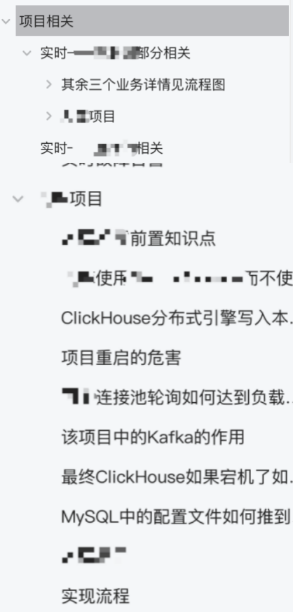

一个月50场面试，跑的慢就抢在别人前面！
收录于话题

今天的主人公也是一个应届生新人拿到满意offer的案例。
下面是一些聊天记录和面经，这名同学做的非常好的一个点，他把个人项目中的所用到的技术栈和项目具体的业务流程图以及用到的技术难点都做了总结。
1. Offer情况
从3月底到4月底，共接到约50次面试，很多面试官表达了简历写的很不错。
2.一些面经
应该同学要求，公司做了隐藏处理。大部分技术点都可以在知识星球找到。
某头部大厂
一面
1. Yarn中的资源调度模型
2. MapReduce的工作流程
3. Hive中的小文件如何处理
4. 离线数仓业务中的数据是如何采集的，业务数据与行为数据分别存放在哪里，这些原始数据存储之后如何处理
5. 业务开发的时候拉链表
6. 从云平台拉取数据到Hive中需要注意什么
7. 最终模型的粒度
8. 主流数据库了解哪些
二面
1. LeetCode原题：有效的电话号码、三数之和
2. DataStream API介绍
3. 实时集成：实时数据如何实现数据实时对账，如何通过数据自动化修复来保证数据一致性
4. 内部某个环节导致程序短暂中断(但是并不是由于数据源导致的数据中断)，然后将程序改正确之后如何保证数据一致性
5. 如何确保实时程序运行过程中没有丢失数据或者漏掉数据的，如何识别
6. 如果有丢失数据的情况是如何补救数据的
7. Java多线程
8. Hbase的rowkey设计原则，项目中如何设计
9. Hbase的版本控制如何控制
10. Spark数据倾斜如何解决
11. ClickHouse的优缺点
12. 项目调试Shell脚本用什么参数，500行的shell脚本，一段一段进行调试该怎么调试
13. Shell脚本如何进行后台调用
深圳某大厂
1. 介绍一下自己的项目经历
2. 数仓分层和星型模型和雪花模型
3. 传统的维度建模如何做
4. 实时数仓项目介绍，流关联类型，广播流？
5. CheckPoint的原理和作用，项目中的配置
6. 自定义算子实现EOS语义
7. 任务挂掉之后如何找到对应的checkpoint
8. Flink CDC有用过吗
9. MySQL的数据同步使用Flink CDC会吗
10. Flink CDC的实现原理
11. MySQL的Binlog被清理之后该如何做Flink CDC全量的处理
12. Flink的会话窗口使用过吗，一般用在哪种业务场景下
13. 滑动窗口、滚动窗口、会话窗口的区别是什么
14. Flink的CEP用过吗，是用来干什么的呢
15. 项目处理的量级，对应的集群规模，这个规模是一个集群管理呢还是多个集群管理
16. 开发的时候遇到过哪些问题吗，技术上的问题
17. 有了解过一些新版Flink的特性吗
某科技公司
一面
1. 自我介绍
2. HDFS的读写原理
3. Hive的内部表和外部表的区别
4. Hive的引擎有哪些
5. MapReduce与Spark的区别
6. Spark中的宽依赖和窄依赖有什么区别
7. Kafka如何保证数据一致性的
8. Kafka本主题在生产数据，Flink在消费数据，有的Flink消费快，有的Flink消费慢，有什么办法去检查这个A、B、C、D四个消费者的消费情况
9. Hbase中写入数据的方式
10. Kafka的数据通过Flink SQL写入到Hive中如何写入
11. Flink的水位线主要解决什么问题的
12. Hive的调优有什么思路吗
13. Java中重载和重写的区别是什么
14. Java中继承和多态的特点
15. 往shell脚本中传入两个参数怎么传
16. shell脚本中写个死循环如何实现：每个五秒钟，打印一句话
17. Linux如何查看CPU的使用率
二面
1. 项目的架构
2. Kafka的基本问题：Kafka的理解，Kafka的问题是变相问的，不是直接问的，Kafka的性能瓶颈，cpu、memory、disk三方面来讨论
3. Hbase的读写流程
4. Hbase的大合并与小合并的区别
5. Hbase的大合并与小合并对应的触发机制、对应的粒度
6. 批量处理之类的脚本会写吗
7. 会经常操作Linux吗，经常操作的Linux的指令对应的功能是什么
8. 如何查看端口的占用情况
9. 知道AWK是什么指令吗
10. 查看CPU的命令还有印象吗
11. 有处理过一些平台级别的故障吗
某科技公司2
1. 自我介绍
2. Flink的四大基石了解吗
3. 讲一下Flink的watermark机制
4. 了解窗口的触发器嘛Trigger
5. Trigger和watermark之间是有什么区别的呢
6. Kafka到Flink的端到端精准一次是怎么实现的
7. Flink的状态过期如何处理
8. 计算一个商品的营业额，10秒一次进行更新
10. 乱序迟到数据的三种解决方法
11. Flink的提交方式有哪些
12. Kafka的分区策略有哪些
13. Kafka的AR、ISR、OSR
14. 什么情况下ISR中的follower会放到OSR中
15. ClickHouse为什么查询速度快
16. Spark的性能调优
17. Hive的数据倾斜
18. Hive的分区分桶机制
19. Hbase的读写流程
20. Hbase的数据热点问题如何解决
21. HDFS的架构了解吗
22. Hadoop的高可用是怎么实现的
23. Java的多线程
24. Java的锁机制，悲观锁、乐观锁、轻量级锁、重量级锁
25. Java Spring MVC的运行流程
26. 进程相关的Linux命令
27. 网络传输协议的七层
28. udp与tcp的区别
29. tcp/ip协议
30. http协议
31. 二叉树——如何查询二叉树的高度
32. 给一个数组实现一个循环的链表
33. 项目中的计算链路
34. 各个项目中Kafka的峰值数据
35. 实时故障告警中涉及到的告警字段有哪些印象深刻的
36. 实时级别是秒级还是分钟级
某信息公司
1. Flink运行在哪儿，Yarn还是k8s上
2. Flink提交任务都是使用的什么模式，Session、Per-Job、Application这三种模式之间的区别是什么
3. Flink有什么机制能够保证在消费Kafka数据的时候不会造成数据丢失和数据重复
4. ClickHouse中的表引擎使用的是哪种，为什么这么选择
5. Kafka->Flink->Kafka->Flink->ClickHouse是如何实现端到端的Eos
6. Flink中的Checkpoint的原理
7. Flink任务的并行度如何做优化和调整的，Source端怎么考虑，Transform端怎么考虑，或者可以通过哪些指标来进行判断吗，判断哪些并行度设置大了或者设置小了
8. Flink反压的优化，如何解决反压
9. Flink数据倾斜的优化，如何解决数据倾斜，什么时候会出现数据倾斜
10. Flink中两个比较大的数据量的流进行join需要考虑什么
在使用Union对侧输出迟到的数据以及合并后的数据再进行合并时还会造成数据丢失吗，会对程序的时效性造成影响吗
11. ClickHouse这种OLAP型引擎为什么查询速度快
12. 其他的OLAP型引擎了解过吗，比如doris或者stackRocks
13. Flink是运行在Yarn上的，那么Yarn集群或者底层的HDFS组件出现过什么问题吗，会由于底层的故障导致Flink任务的失败吗
14. 在使用Redis当作Hbase的二级缓存来实现Flink对应任务的这个场景下，为什么考虑Redis当作二级缓存，有考虑过Flink本身的缓存机制吗
15. 维度建模的方法，事实表和维度表的设计有了解过吗
16. 维度表的一些属性需要不需要冗余到事实表中，哪些需要冗余到事实表，哪些需要在做具体查询的时候做一个关联有考虑过吗
3. 重磅个人项目总结
这个同学自己总结了一个文档，文档时个人项目的总结和面试点。包括：业务知识、架构图、项目流程图、项目中的集群数据规模、开发中遇到的技术问题等等。
我个人非常建议这样的做法，项目面试占整个面试的至少50%，一个详细的总结非常有必要。下面是一些截图。

还有一些项目中遇到的知识点汇总：
4. 总结
我在跟这个同学一对一聊简历的时候的明显感觉：
该同学各个方面的背景并不是十分突出，不是名校，项目也没有很复杂，但是为找工作做了充足的准备，包括项目中的难点梳理和可能遇到的面试问题，所有工作都做在了前面。
目标非常明确，行动力强。愿意花时间去研究项目用到的技术栈和原理。根据建议去对应的技术模块下整理知识点。
大家加油吧！